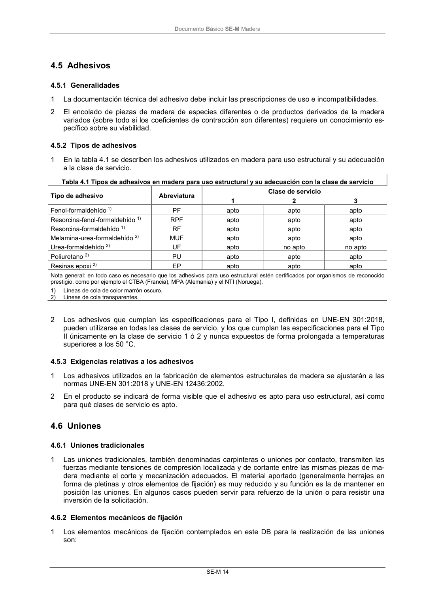

DB-SE-M Madera · edición 2019-12-20 · capa oficial
Documento DB-SE-M-oficial · SHA-256 del PDF 26b5819839ebfda78b0b119c5e76a0a37773b0d763c05688541870075df93718
Copia fiel del PDF fuente · Fuente oficial
Ficha de la disposición en la fuente oficial
Formatos: JSON del segmento · Markdown
4.5.2 Tipos de adhesivos 1 En la tabla 4.1 se describen los adhesivos utilizados en madera para uso estructural y su adecuación a la clase de servicio. Tabla 4.1 Tipos de adhesivos en madera para uso estructural y su adecuación con la clase de servicio Tipo de adhesivo Abreviatura Clase de servicio 1 2 3 Fenol-formaldehído 1) PF apto apto apto Resorcina-fenol-formaldehído 1) Resorcina-formaldehído 1) Melamina-urea-formaldehído 2) Urea-formaldehído 2) RPF RF MUF UF apto apto apto apto apto apto apto no apto apto apto apto no apto Poliuretano 2) PU apto apto apto Resinas epoxi 2) EP apto apto apto Nota general: en todo caso es necesario que los adhesivos para uso estructural estén certificados por organismos de reconocido prestigio, como por ejemplo el CTBA (Francia), MPA (Alemania) y el NTI (Noruega). 1) Líneas de cola de color marrón oscuro. 2) Líneas de cola transparentes. 2 Los adhesivos que cumplan las especificaciones para el Tipo I, definidas en UNE-EN 301:2018, pueden utilizarse en todas las clases de servicio, y los que cumplan las especificaciones para el Tipo II únicamente en la clase de servicio 1 ó 2 y nunca expuestos de forma prolongada a temperaturas superiores a los 50 °C.
